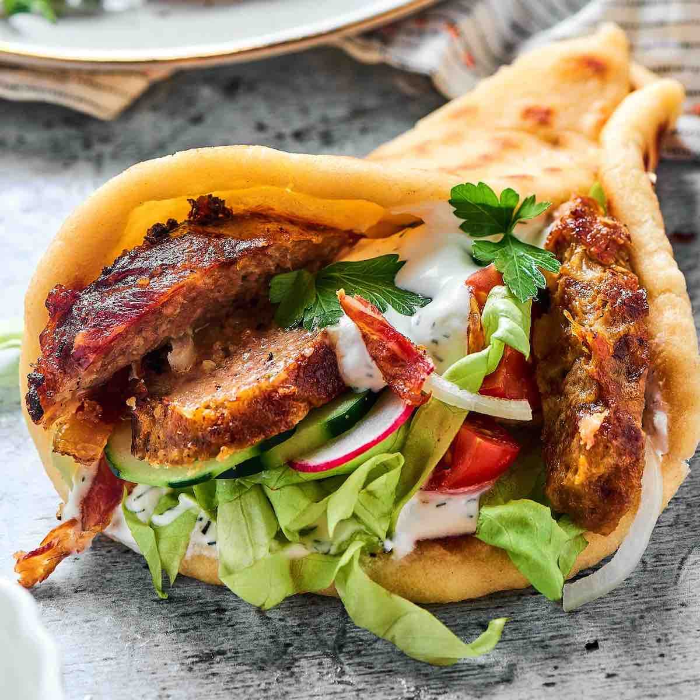

Description:
Gyros is one of the most popular Greek street food dishes, consisting of meat such as pork and chicken
(in Greece) or lamb and veal (popular in other countries) cooked on a vertical spit.
The meat is sliced in thin shavings and is then usually placed in a pita bread along with sauces
such as tzatziki and vegetables such as tomatoes, onions, lettuce, and cucumbers.
Gyros is derived from the Greek word gheereezo, meaning to turn, referring to the constantly rotating vertical
spit on which the meat is cooked. Some believe that gyros originated during the time of Alexander the Great,
when his soldiers skewered the meat on their swords and cooked it over a fire.
Ingredients:
- 1 small onion, cut into chunks
- 1 pound ground lamb
- 1 pound ground beef
- 1 tablespoon minced garlic
- 1 teaspoon dried oregano
- 1 teaspoon ground cumin
- 1 teaspoon dried marjoram
- 1 teaspoon dried thyme
- 1 teaspoon dried rosemary
- 1 teaspoon freshly ground black pepper
- 1/4 teaspoon sea salt
- 12 tablespoons hummus
- 12 pita bread rounds
- 1 small head lettuce, shredded
- 1 large tomato, sliced
- 1 large red onion, sliced
- 6 ounces crumbled feta cheese
- 24 tablespoons tzatziki sauce
Steps:
- Place onion in a food processor and finely chop. Transfer onion to a piece
of cheesecloth and squeeze out the liquid. Place onion in a large bowl.
- Mix lamb, beef, garlic, oregano, cumin, marjoram, thyme, rosemary, black pepper,
and salt with the onion using your hands until well mixed. Cover bowl with plastic
wrap and refrigerate until flavors blend, about 2 hours.
- Preheat the oven to 325 degrees F (165 degrees C).
- Place meat mixture in a food processor and pulse until finely chopped and tacky, about 1 minute.
Pack meat mixture into a 7x4-inch loaf pan, ensuring there are no air pockets.
Place the loaf pan into a roasting pan and pour enough boiling water around the loaf
pan to reach halfway up the sides for a water bath.
- Bake in the preheated oven until no longer pink in the center, 45 to 60 minutes.
An instant-read thermometer inserted into the center should read at least 165 degrees F
(74 degrees C). Pour off any accumulated fat and cool slightly.
- Thinly slice the cooked gyro meat loaf.
- Spread 1 tablespoon hummus onto each pita bread. Then top each with some of the gyro meat slices,
shredded lettuce, tomato slices, red onion slices, feta cheese crumbles, and 2 tablespoons tzatziki
sauce to complete each sandwich.